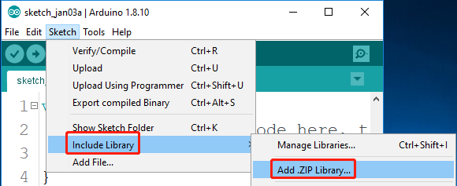
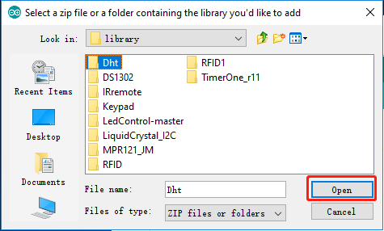
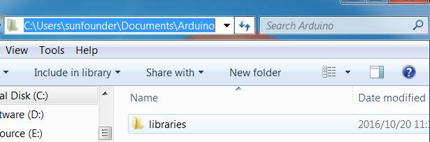

Teil 4: Anhang¶
4.1 Bibliotheken hinzufügen¶
Was ist Bibliothek?¶
Eine Bibliothek, die einige Funktionsdefinitionen und Header-Dateien sammelt. Sie enthält normalerweise zwei Dateien: .h (Header-Dateien, einschließlich Funktionsdeklarationen, Makrodefinitionen, Konstruktordefinitionen usw.) und .cpp (Ausführungsdateien mit Funktionsimplementierungen, Variablendefinitionen und Abhängigkeiten Und so weiter). Wenn Sie eine Funktion in einer Bibliothek verwenden müssen, müssen Sie nur eine Header-Datei hinzufügen (z. B. #include) <dht.h> ) und rufen Sie dann diese Funktion auf. Dies kann Ihren Code präziser machen. Wenn Sie die Bibliothek nicht verwenden möchten, können Sie diese Funktionsdefinition auch direkt schreiben. Infolgedessen ist der Code jedoch lang und unpraktisch zu lesen.
Bibliotheken hinzufügen¶
Einige Bibliotheken sind bereits in der Arduino IDE erstellt, während andere möglicherweise hinzugefügt werden müssen. Nun wollen wir sehen, wie man eine hinzufügt. Dafür gibt es zwei Methoden.
Methode 1
Importieren Sie die Bibliothek direkt in die Arduino IDE (nehmen Sie Dht als Beispiel unten). Der Vorteil dieser Methode besteht darin, dass sie leicht zu verstehen und zu bedienen ist. Andererseits kann jeweils nur eine Bibliothek importiert werden. Es ist daher unpraktisch, wenn Sie eine ganze Reihe von Bibliotheken hinzufügen müssen.
Schritt 1: Wählen Sie. Sketch -> Include Library -> Add ZIP Library.
{kind=link}
Schritt 2: Finden Sie SunFounder Mega KitLibrary, klicken Sie Open.
{kind=link}
Schritt 3: Wenn Sie “ Menü „sehen, bedeutet dies, dass Sie die Bibliothek erfolgreich hinzugefügt haben. Bitte verwenden Sie dieselbe Methode, um dann andere Bibliotheken hinzuzufügen.

Methode 2
Kopieren Sie die Bibliothek direkt in den Bibliotheks- / Arduino-Pfad. Diese Methode kann alle Bibliotheken kopieren und gleichzeitig hinzufügen. Der Nachteil ist jedoch, dass es schwierig ist, Bibliotheken / Arduino zu finden.
Schritt 1: Klicken Sie auf File -> Preferences und im Popup-Fenster sehen Sie den Pfad des Bibliotheksordners im Textfeld, wie unten gezeigt.

Schritt 2: Kopieren Sie alle Bibliotheken in den Bibliotheksordner.
{kind=link}
Schritt 4: Gehen Sie zum obigen Pfad und Sie werden sehen, dass sich ein Bibliothek Ordner befindet. Klicken Sie, um ihn zu öffnen.
{kind=link}
Schritt 5: Fügen Sie alle zuvor kopierten Bibliotheken in den Ordner ein. Dann können Sie sie im Bibliotheksordner sehen.
{kind=link}
Urheberrechtshinweis¶
Alle Inhalte, einschließlich, aber nicht beschränkt auf Texte, Bilder und Code in diesem Handbuch, sind Eigentum der SunFounder Company. Gemäß den einschlägigen Vorschriften und Urheberrechtsgesetzen können Sie es nur für persönliches Lernen, Forschung, Unterhaltung oder andere nichtkommerzielle oder gemeinnützige Zwecke verwenden und verletzen nicht die gesetzlichen Rechte des Autors und verwandter Rechteinhaber. Für jede Person oder Organisation, die diese ohne Erlaubnis für kommerzielle Zwecke nutzt, behält sich das Unternehmen das Recht vor, rechtliche Schritte einzuleiten.